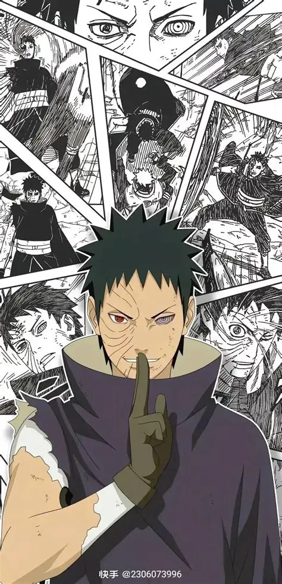

宇智波带土，木叶隐村宇智波一族族人，第四次忍界大战核心反派，忍界大战幕后主导者之一。
一、少年时期（温柔少年）
自幼性格善良软弱，天赋平平，常被同龄人嘲笑，内心十分渴望得到认可。
与旗木卡卡西、野原琳同为波风水门弟子，三人感情深厚。
十分珍视同伴，将友情看得重于一切，立志成为守护同伴的忍者。
擅长火遁忍术，年少便开启单勾玉写轮眼，潜力巨大。
二、神无毗桥巨变（命运陨落）
第三次忍界大战执行任务时，为救下卡卡西身受重伤，被巨石掩埋半身。
众人皆以为带土当场牺牲，卡卡西继承其写轮眼，永远铭记这位挚友。
带土并未死去，被宇智波斑暗中救下，依靠白绝细胞勉强保住性命。
亲眼目睹卡卡西亲手杀死琳，内心信仰彻底崩塌，彻底堕入黑暗。
三、蛰伏隐忍（暗中布局）
听从宇智波斑安排，隐姓埋名游走忍界，暗中收拢势力。
假扮成宇智波鼬、操控晓组织，一步步推进月之眼计划。
逐渐褪去昔日温柔，变得冷酷无情，一心想要创造拥有琳的虚拟世界。
熟练掌握宇智波一族全部能力，同时习得轮回眼之力，实力飞速暴涨。
四、执掌晓组织（搅动忍界）
以幕后黑手身份掌控晓组织，驱使一众强者抓捕九大尾兽。
策划多起重大事件，挑起各国矛盾，不断挑起战乱。
伪装身份游走各方，欺骗忍者联军，一步步完成战前所有布局。
内心依旧残留少年温情，始终无法彻底割舍与卡卡西的过往情谊。
五、破面觉醒（巅峰战力）
忍界大战正式现身，褪去伪装，以破面形态全力出战。
融合十尾成为十尾人柱力，掌控六道之力，实力凌驾五大影级强者。
精通神威空间忍术、火遁、阴阳遁，攻守兼备几乎没有短板。
拥有改写现实、操控幻境的强大能力，一度碾压整个忍者联军。
六、迷途知返（最终救赎）
在鸣人的感化与昔日回忆冲击下，彻底挣脱黑绝与斑的思想控制。
幡然醒悟认清错误，选择放下执念，重新坚守最初的本心。
为保护卡卡西与鸣人等人，挺身而出挡下致命攻击，壮烈牺牲。
临死前将双眼完整万花筒写轮眼赠予卡卡西，彻底完成一生遗憾。
七、人物信条
“曾经我想要守护同伴，后来我只想重塑一个有你的世界。”